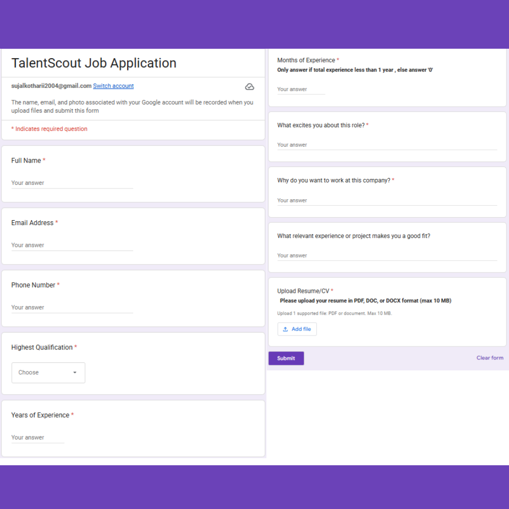
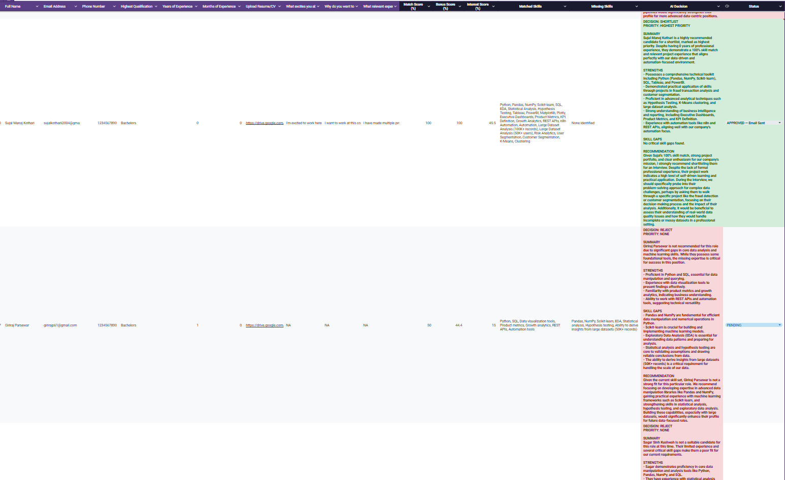
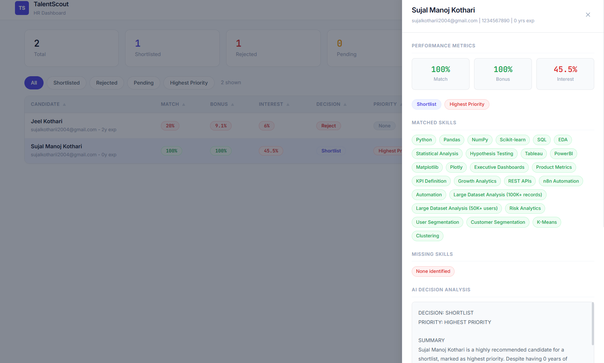
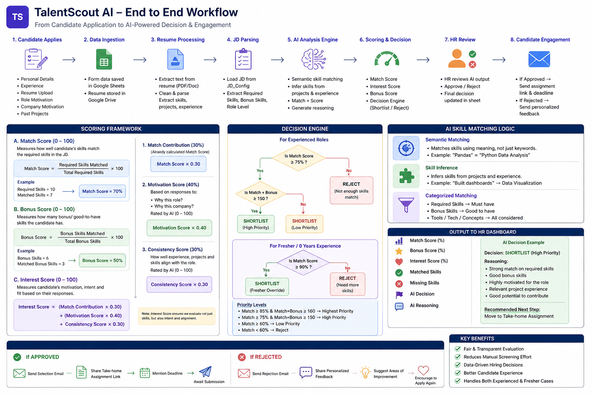

Building AI systems that turn messy workflows into clear decisions
I design and ship data-driven products with a focus on user behavior, decision systems, and AI-assisted workflows. Currently pursuing B.Tech in CS at VIT Bhopal (CGPA: 8.61).
An end-to-end AI hiring assistant that evaluates candidates against job requirements and generates structured decisions with full recruiter oversight.
View Case Study →A live automated pricing system that flags competitor price deviations daily via n8n + Python - runs at zero infrastructure cost.
View Case Study →Built the PRD for AINAK, a multilingual image platform targeting 742 Indian districts, and designed a Voice AI evaluation framework from scratch.
View Case Study →Candidates get no feedback. Recruiters lack structured evaluation. Hiring becomes a black box.
Most hiring systems are built for the recruiter's convenience, not the candidate's clarity. There's no standardized signal - just gut feel and keyword matching. TalentScout was built to fix both sides of this broken loop.
Who is affected: Candidates applying to roles without knowing why they were rejected. Recruiters spending hours reviewing resumes without a consistent rubric.
Where it breaks: At the evaluation stage - between "application received" and "decision made."
An AI-powered hiring assistant that evaluates candidates against job requirements and generates structured feedback with decision support - built entirely on Google Forms + Sheets + Apps Script.




Live system - tested with 20+ candidates across real role evaluations.
Why these tech choices? Google Forms, Sheets, and Apps Script was a deliberate choice, not a limitation. It's zero-cost, HR teams already know how to use Sheets, and it deploys instantly without any infrastructure setup.
Trade-offs I considered:
Chose scoring framework with defined weights - produces consistent, auditable decisions. Raw LLM output varies too much for HR to trust.
Fully automated decisions risk false negatives on strong candidates. Kept HR override - AI recommends, human decides. Reduces liability and builds trust.
Chose meaning-based matching (Pandas = "Python Data Analysis") over keyword matching - catches inferred skills from project descriptions, not just exact terms.
Built an automated price-flagging system that runs daily, compares FlixBus listings against market medians, and alerts the pricing team via Slack - at zero infrastructure cost.
Pricing ambiguity: FlixBus had no systematic way to know if they were overpriced or underpriced relative to competitors on any given route, any given day.
Price does not equal perception. A low-priced FlixBus on a route where it has higher ratings than competitors is leaving revenue on the table. A high-priced listing on a route where competitors are rated better is a double red flag.
How it works:
| High FlixBus Rating | Low FlixBus Rating | |
|---|---|---|
| Underpriced | Revenue Loss - raise price | Poor quality + cheap - urgent review |
| Overpriced | Premium partly justified | Double Red Flag - most urgent |
Chose median over mean for reference price - more robust against outliers on routes with 1-2 extreme competitors.
Human-in-the-loop: The system detects and alerts. Pricing managers click Approve or Reject in Slack. No autonomous price changes. This is the same governance model used by Uber and Booking.com internally.
Connect to FlixBus internal pricing API - auto-correct on approval. The n8n workflow already has the HTTP Request node infrastructure in place. One API key away from full automation.
The Problem: AI vision models like CLIP and GPT-4V can identify the Eiffel Tower but call a Durga Puja pandal a "colorful tent structure." They've never been trained on India. AINAK (meaning "spectacles" in Hindi - because it gives AI new eyes) is a mobile-first, multilingual image collection platform to close this gap.
Scale: 742 districts, 28 states, 22 scheduled languages, 1,000 verified images per village target
Key PM Decisions:
User types defined: NGO Field Volunteers, Paid Field Agents, Individual Public Contributors, Freelance Annotators (district-assigned), Admin/Internal Reviewers
Figma designs created for both User Screens and Admin Screens.
The Problem: Across 50,000+ user interactions, a subset of audio transcribers were rushing through content - fast completions with low quality. The system needed to detect low-quality contributors at scale.
The Solution: Mapped patterns between transcription speed and audio length across the full dataset - built a flagging logic that identifies contributors whose speed-to-accuracy ratio consistently falls below threshold. Converts noisy behavioral data into a quality control signal.
Key Insight: Speed and quality are inversely correlated past a threshold. The same failure mode exists in AI evaluation work - evaluators who rush give fast ratings that feel like data but contain no signal.
The Problem: Voice AI systems are increasingly deployed in customer support and booking flows - but evaluation is inconsistent. One evaluator prioritizes task completion. Another penalizes the same silence another considers good pacing. Results aren't comparable across time or evaluator pools.
The Framework I Designed (4 criteria):
Did the AI accomplish the goal? Fully / Partially / Attempted / Failed. Binary for clean calls, nuanced for partial completions.
Did it sound like a person? Pacing, filler words, robotic patterns, uncanny regularity. A bot that responds in exactly 1.2 seconds every time breaks the interaction even when the content is right.
Did it correctly understand accented, code-switched, or indirect speech? Separates comprehension failures from task failures.
What happened when things went off-script? Silence, unexpected answers, interruptions. A system that scores 3 on everything else but 0 on recovery is brittle - works in demos, fails in production.
Why this matters for India specifically: Voice AI trained on American English fails on Indian accents, Hinglish, and regional vocabulary. These criteria catch that failure explicitly.
Selected from a national pool for developing a high-impact acquisition model based on CEO-mindset principles.
Orchestrated 5+ major events, streamlined vendor logistics, increased participant satisfaction by 30%.